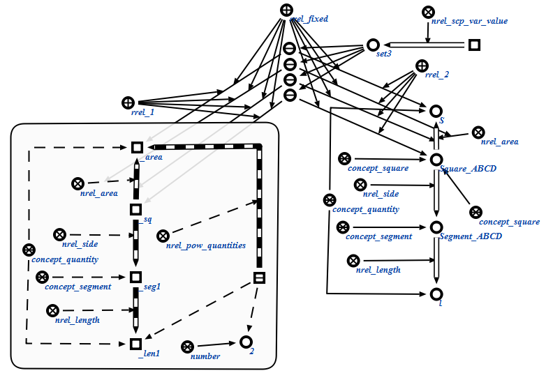

Задачей scp-программы маркировки утверждений является выделение из атомарных формул конструкций, которые будут переданы на вход оператору генерации конструкций по произвольному образцу для появления в sc-памяти новых знаний. Первым входным параметром данной scp-программы является множество связываемых переменных. Вторым входным параметром является атомарная формула, используемая для выстраивания пар соответствия. Третьим входным параметром данной scp-программы является объект, задействованный в спецификации sc-действия, поданный на вход агенту логического вывода. Четвертым входным параметром является граф условия. Пятым входным параметром является множество пар соответствия, построенных в ходе выполнения scp-программы. Шестым входным параметром является множество посещенных вершин, формируемое на этапе обхода переменных из атомарной формулы. Седьмым входным параметром является множество узлов, участвовавших в конструкциях атомарной формулы. Результаты выполнения процедуры представлены ниже:
